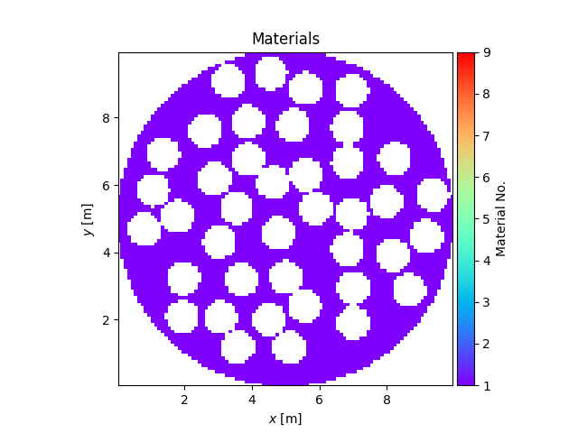
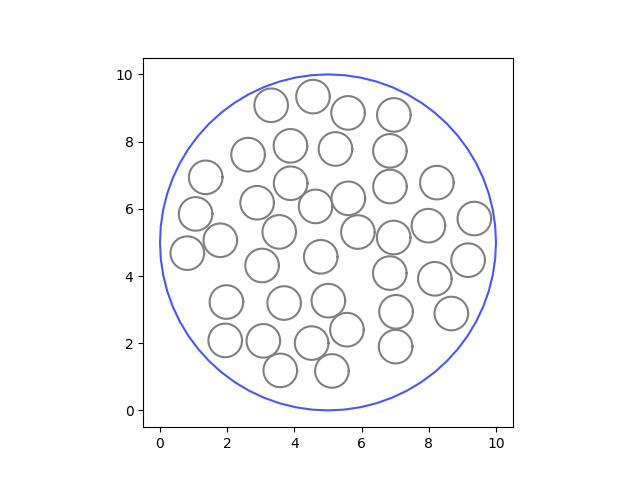

Note
Go to the end to download the full example code.
Pore Creation Demo
PySaleSetup can be used to create meshes containing material with pores populating them. This is a short demo to show how.
- 
- 
from PySALESetup import PySALEObject, PySALEDomain, PySALEMesh
import matplotlib.pyplot as plt
main = PySALEObject.generate_ellipse([5., 5.], 5., 5., 0.)
main.set_material(1)
domain = PySALEDomain(main)
circle = PySALEObject.generate_ellipse([0., 0.], .5, .5, 0.)
circle.set_as_void()
domain.fill_with_random_grains_to_threshold(circle, 40)
mesh = PySALEMesh(100, 100, cell_size=.1)
for child in main.children:
child.set_as_void()
mesh.project_polygons_onto_mesh([main])
mesh.plot_materials()
main.plot()
plt.show()
Total running time of the script: (0 minutes 0.751 seconds)